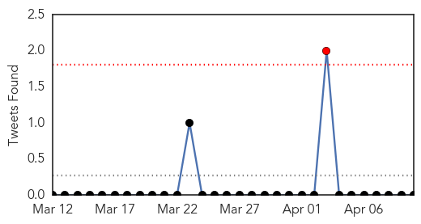
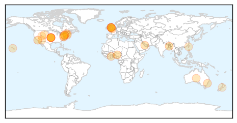
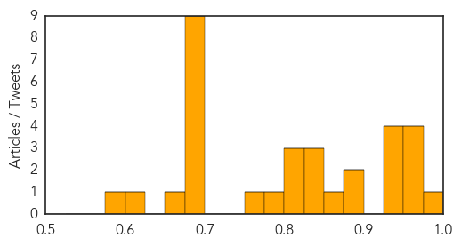

Influenza
30-Day Web Trend
1 alerts, 0 warnings
30-Day Twitter Trend
0 alerts, 0 warnings

Article Locations
Article Confidences
Top Articles:
- 0.977
- UK scientists slam flu drug in ongoing debate
- 0.958
- Flu drugs may not be worth stockpiling – The Chart
- 0.956
- NIH funds influenza research and surveillance network
- 0.955
- Lassa virus was unwanted passenger on N.Y.-Mpls. flight
- 0.953
- Tamiflu and Relenza review questions effectiveness against flu
- 0.949
- Is stockpiling pandemic flu drugs shrewd or misguided?
- 0.948
- Researchers at five sites receive NIH funding for influenza research
- 0.948
- Tamiflu: drugs given for swine flu 'were waste of £500m'
- 0.945
- Deadly H5N1 bird flu needs just 5 mutations to spread easily in people
- 0.885
- Government stockpiles flu medicine, but does it work?
- 0.880
- Millions Wasted On Flu Drug, Claims Major Report
- 0.854
- UPDATE 1-Stockpiles of Roche Tamiflu drug are waste of money, review finds
- 0.845
- Antiviral drug stockpile a waste of money, says study
- 0.834
- Millions of dollars wasted on flu drug Tamiflu, review finds
- 0.830
- Stockpiles of Roche Tamiflu drug are waste of money, review finds
- 0.824
- Researcher raises questions about flu drug benefits
- 0.817
- Tamiflu not as effective as promised: researchers
- 0.803
- Stockpiles of flu drug a waste of money, review finds
- 0.793
- Antiviral drug stockpile a waste of money, says study
- 0.770
- Video: Tamiflu: Government 'must listen' to findings
- 0.689
- Scientists Publish Recipe For Making Bird Flu More Contagious
- 0.689
- Scientists Publish Recipe For Making Bird Flu More Contagious
- 0.689
- Scientists Publish Recipe For Making Bird Flu More Contagious
- 0.689
- Scientists Publish Recipe For Making Bird Flu More Contagious
- 0.689
- Scientists Publish Recipe For Making Bird Flu More Contagious
- 0.689
- Scientists Publish Recipe For Making Bird Flu More Contagious
- 0.689
- Scientists Publish Recipe For Making Bird Flu More Contagious
- 0.689
- Scientists Publish Recipe For Making Bird Flu More Contagious
- 0.689
- Scientists Publish Recipe For Making Bird Flu More Contagious
- 0.665
- Taiwan Culls Poultry to Prevent Spread of H5N3 Bird Flu
- 0.612
- White House Expert: Global Health Is National Security Issue
- 0.578
- Ministry defends stockpiling flu drug
Top Tweets:
-
No tweets found for Apr 10, 2014
Measles
30-Day Web Trend
0 alerts, 5 warnings

30-Day Twitter Trend
0 alerts, 0 warnings

Article Locations

Article Confidences

Top Articles:
- 0.996
- Measles outbreaks in Canada outsize U.S.
- 0.995
- Why are Canadian measles outbreaks so large?
- 0.971
- Vaccines an important preventative measure, medical officer says
- 0.960
- Getting vaccines helps protect all
- 0.953
- No measles cases in Durham Region
- 0.918
- Measles hits Manitoba
- 0.910
- Case of Measles Confirmed in Maricopa County
- 0.874
- Measles stronger in Vietnam, even as infection rates drop
- 0.850
- Traveler with measles may have exposed others in Valley
- 0.849
- Case of measles reported in Northampton; Smith College faculty member afflicted, college issues warning
- 0.847
- 25 children die of measles
- 0.842
- Traveler with measles may have exposed others in Valley
- 0.829
- Vaccines save lives but many snub them through bad information
- 0.768
- Measles alert prompts warnings about parents forgoing kids’ vaccines – Cronkite News
- 0.713
- Measles Cases Linked to U.S. Adoptions of Chinese Children: CDC
- 0.707
- Measles cases linked to US adoptions of Chinese children, CDC reports
- 0.693
- Measles outbreak in Phoenix puts Tucson on alert
- 0.661
- Whooping cough returns to Nevada
- 0.631
- ETHIOPIA: Urgent assistance needed for South Sudanese refugees
- 0.626
- Parents, you are being lied to. Here's the proof.
- 0.598
- Ethiopia: Urgent assistance needed for South Sudanese refugees
- 0.545
- Ethiopia: urgent assistance needed for South Sudanese refugees
Top Tweets:
-
No tweets found for Apr 10, 2014